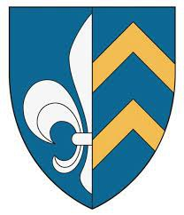

Antavla
23805960 Harald Agmundsson Stangarfylja Bolt
Riksråd. Blev högst 47 år.

Far:
Agmund Halvardsen (1160? - >1180)
Mor:
NN Haraldsdatter Bratt
Född:
1180 Stange, Hedmark, Norge.
[1]
Död:
1227.
[1]
Barn med
23805961 Ulfhild Simonbdatter Ku til Tomb (1185? - )
Barn:
Ogmund Haraldsson Bolt (1235 - 1270)
Personhistoria
Årtal
Ålder
Händelse
1180
Födelse 1180 Stange, Hedmark, Norge
[1]
>1180
Fadern
47611920 Agmund Halvardsen
dör efter 1180 Norge
1185?
Partnern
23805961 Ulfhild Simonbdatter Ku til Tomb
föds omkring 1185
[1]
1227
Död 1227
[1]
Källor
[1]
Jan Edgar Michelsen